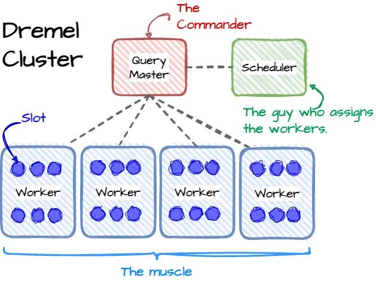
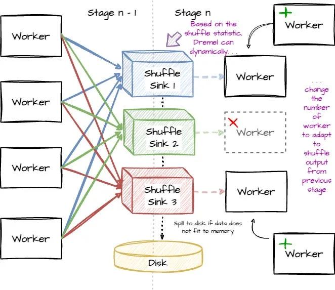
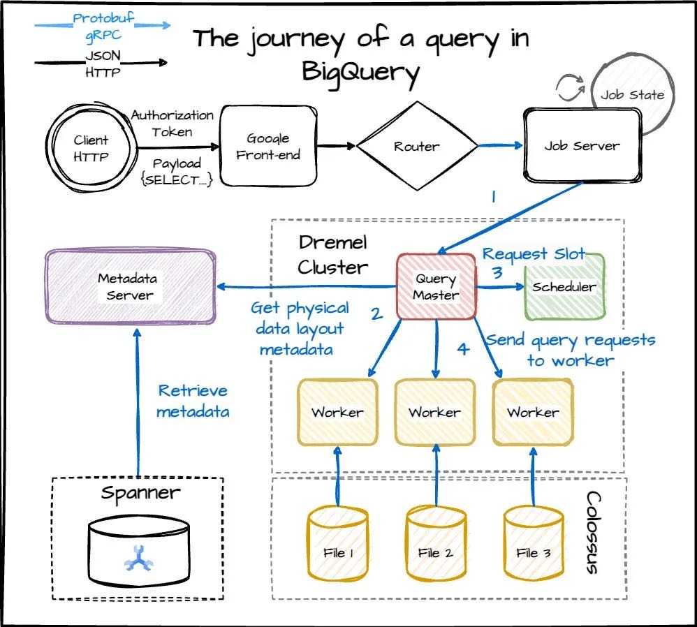

网络文章@202404
架构上有个scheduler在做task调度，每个stage以shuffle层作为临时存储节点，可以是内存也可以spill到磁盘上

有了scheduler之后，以及类似这种stage-by-stage方案，中间还可以进行自适应增加和减少节点来应对data skew.

在进行元信息分析的时候也可以用dremel来加速，big metadata
- After having the information, the Query Master looks up the table’s metadata from the metadata server (Google using Cloud Spanner for metadata storage); if the partition pruning is applied, the metadata server will only return the file locations for the partitions that match the filter. (Query Master uses other Dremel jobs for the look-up process.)
获得信息后，Query Master 从元数据服务器查找表的元数据（Google 使用 Cloud Spanner 进行元数据存储）；如果应用分区修剪，元数据服务器将仅返回与过滤器匹配的分区的文件位置。 （Query Master 使用其他 Dremel 作业进行查找过程。）

恐惧会让你成为更糟糕的程序员 — Fear makes you a worse programmer
Before I start, Ryan Kennedy linked me to this slide deck of a presentation he gave called Fear Driven Development which I absolutely loved, and I think you should look at it. I think my favorite sentence from that presentation is “Fear creates local maximums.”
在我开始之前，瑞安·肯尼迪（Ryan Kennedy）将我链接到了他的幻灯片，名为“恐惧驱动的发展”，我非常喜欢它，我认为你应该看看它。我认为该演讲中我最喜欢的一句话是“恐惧创造局部最大值”。
I find that when I’m afraid, I become super conservative. WE CANNOT POSSIBLY MAKE THIS CHANGE WHAT IF IT BREAKS?! And this means worse software! It’s actually kind of disastrous. If you’re scared of making changes, you can’t make something dramatically better, or do that big code cleanup. Maybe you can’t even deploy the code that you already wrote and tested, because it feels too scary. You just want to stick what’s sort-of-working, even if it’s not great.
我发现当我害怕时，我会变得超级保守。我们不可能做出这样的改变，如果它坏了怎么办？！这意味着更糟糕的软件！这实际上是灾难性的。如果你害怕做出改变，你就无法让事情变得更好，或者进行大规模的代码清理。也许你甚至无法部署已经编写和测试过的代码，因为感觉太可怕了。你只是想坚持做有效的事情，即使它不是很好。
Better tools & process => less fear 更好的工具和流程 => 更少的恐惧
But testing and version control are not the only tools we have! We can also build
但测试和版本控制并不是我们唯一的工具！我们还可以建造
- QA environments where breaking things is totally allowed and encouraged 完全允许和鼓励破坏事物的 QA 环境
- deploys that go out a little bit at a time 一次只进行一点点的部署
- the ability to roll back a deploy easily 轻松回滚部署的能力
- QA teams, whose job it is to exhaustively test software QA 团队，其工作是彻底测试软件
- tools that will email you if your program throws exceptions 如果您的程序抛出异常，它将向您发送电子邮件的工具
and lots more. 还有更多。